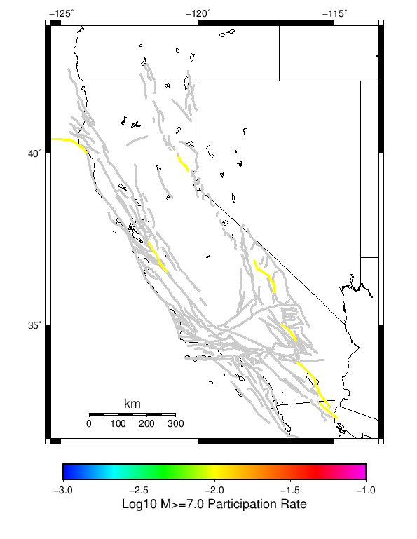
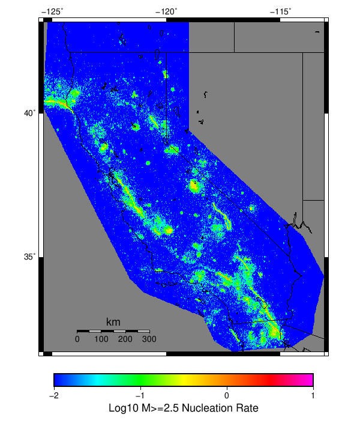
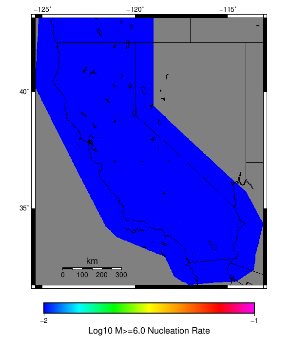

| Input Catalog With Spontaneous |
|---|
| Num Simulations | 10 |
| Start Time | 2012/01/01 00:00:00 UTC |
| Start Time Epoch Milliseconds | 1325376000000 |
| Duration | 10 Years |
| Includes Spontaneous? | true |
| Trigger Ruptures | (none) |
| Historical Ruptures | 10167 Trigger Ruptures |
| First: M7.6 at 1872/03/26 10:31:39 UTC |
| Last: M3.2 at 2011/12/31 19:14:44 UTC |
| Largest: M7.8 at 1906/04/18 13:12:21 UTC |
Table Of Contents
Magnitude Frequency Distribution
(top)
Legend
- Mean (thick black line): mean annual rate across all 10 catalogs
- 2.5%,97.5% (thin black lines): annual rate percentiles across all 10 catalogs
- Median (thin blue line): median annual rate across all 10 catalogs
- Mode (thin cyan line): modal annual rate across all 10 catalogs (scaled to annualized value)
- 10 yr Probability (thin red line): 10 year probability calculated as the fraction of catalogs with at least 1 occurrence
- 95% Conf (light red shaded region): binomial 95% confidence bounds on probability

| Mag | Mean | 2.5 %ile | 97.5 %ile | Median | Mode | 10 yr Probability |
|---|
| M≥2.5 | 2551.060 | 1789.300 | 3864.900 | 2337.700 | 2491.400 | 1.000 |
| M≥2.6 | 2020.090 | 1415.700 | 3049.600 | 1853.100 | 1968.800 | 1.000 |
| M≥2.7 | 1600.820 | 1131.600 | 2406.900 | 1465.200 | 1557.900 | 1.000 |
| M≥2.8 | 1273.120 | 892.200 | 1917.000 | 1169.500 | 1235.600 | 1.000 |
| M≥2.9 | 1009.530 | 708.400 | 1530.100 | 930.500 | 972.200 | 1.000 |
| M≥3 | 803.900 | 557.700 | 1222.600 | 736.700 | 773.700 | 1.000 |
| M≥3.1 | 638.760 | 444.200 | 962.600 | 590.800 | 618.700 | 1.000 |
| M≥3.2 | 507.250 | 354.200 | 762.600 | 468.900 | 492.500 | 1.000 |
| M≥3.3 | 402.750 | 280.400 | 610.000 | 370.100 | 389.200 | 1.000 |
| M≥3.4 | 320.710 | 219.900 | 488.200 | 292.500 | 309.000 | 1.000 |
| M≥3.5 | 254.110 | 173.400 | 385.200 | 231.600 | 245.600 | 1.000 |
| M≥3.6 | 202.920 | 140.000 | 307.000 | 185.600 | 197.300 | 1.000 |
| M≥3.7 | 160.780 | 111.400 | 249.100 | 147.000 | 154.300 | 1.000 |
| M≥3.8 | 127.430 | 90.200 | 198.300 | 116.100 | 122.200 | 1.000 |
| M≥3.9 | 101.270 | 72.100 | 156.600 | 93.300 | 98.200 | 1.000 |
| M≥4 | 80.580 | 59.300 | 127.300 | 73.800 | 78.800 | 1.000 |
| M≥4.1 | 64.250 | 45.900 | 104.600 | 59.000 | 61.300 | 1.000 |
| M≥4.2 | 51.310 | 37.500 | 84.400 | 47.400 | 48.900 | 1.000 |
| M≥4.3 | 40.940 | 29.800 | 67.800 | 37.800 | 38.100 | 1.000 |
| M≥4.4 | 32.400 | 23.100 | 52.900 | 29.900 | 30.100 | 1.000 |
| M≥4.5 | 25.760 | 18.100 | 42.300 | 23.500 | 23.800 | 1.000 |
| M≥4.6 | 20.430 | 14.500 | 33.500 | 19.200 | 19.800 | 1.000 |
| M≥4.7 | 16.520 | 11.000 | 27.200 | 15.600 | 15.900 | 1.000 |
| M≥4.8 | 13.010 | 8.000 | 21.100 | 12.100 | 12.100 | 1.000 |
| M≥4.9 | 10.390 | 6.600 | 16.700 | 9.800 | 8.900 | 1.000 |
| M≥5 | 8.580 | 5.200 | 13.500 | 8.000 | 8.400 | 1.000 |
| M≥5.1 | 6.640 | 3.900 | 10.600 | 6.300 | 6.400 | 1.000 |
| M≥5.2 | 5.170 | 2.700 | 8.600 | 4.900 | 5.000 | 1.000 |
| M≥5.3 | 4.090 | 2.300 | 6.200 | 3.800 | 3.800 | 1.000 |
| M≥5.4 | 3.220 | 1.900 | 4.600 | 3.000 | 3.000 | 1.000 |
| M≥5.5 | 2.580 | 1.500 | 3.800 | 2.400 | 2.400 | 1.000 |
| M≥5.6 | 2.030 | 0.900 | 2.900 | 2.000 | 2.400 | 1.000 |
| M≥5.7 | 1.650 | 0.900 | 2.600 | 1.700 | 1.700 | 1.000 |
| M≥5.8 | 1.260 | 0.600 | 2.200 | 1.300 | 1.300 | 1.000 |
| M≥5.9 | 0.940 | 0.300 | 1.800 | 1.000 | 1.100 | 1.000 |
| M≥6 | 0.730 | 0.100 | 1.500 | 0.700 | 0.900 | 1.000 |
| M≥6.1 | 0.620 | 0.000 | 1.300 | 0.700 | 0.700 | 0.900 |
| M≥6.2 | 0.520 | 0.000 | 1.300 | 0.400 | 0.400 | 0.900 |
| M≥6.3 | 0.420 | 0.000 | 0.900 | 0.400 | 0.400 | 0.900 |
| M≥6.4 | 0.290 | 0.000 | 0.800 | 0.200 | 0.200 | 0.900 |
| M≥6.5 | 0.210 | 0.000 | 0.600 | 0.100 | 0.100 | 0.900 |
| M≥6.6 | 0.180 | 0.000 | 0.600 | 0.100 | 0.100 | 0.900 |
| M≥6.7 | 0.140 | 0.000 | 0.400 | 0.100 | 0.100 | 0.900 |
| M≥6.8 | 0.120 | 0.000 | 0.300 | 0.100 | 0.100 | 0.900 |
| M≥6.9 | 0.090 | 0.000 | 0.200 | 0.100 | 0.100 | 0.800 |
| M≥7 | 0.090 | 0.000 | 0.200 | 0.100 | 0.100 | 0.800 |
| M≥7.1 | 0.070 | 0.000 | 0.200 | 0.100 | 0.100 | 0.600 |
| M≥7.2 | 0.030 | 0.000 | 0.100 | 0.000 | 0.000 | 0.300 |
| M≥7.3 | 0.030 | 0.000 | 0.100 | 0.000 | 0.000 | 0.300 |
| M≥7.4 | 0.010 | 0.000 | 0.100 | 0.000 | 0.000 | 0.100 |
| M≥7.5 | 0.000 | 0.000 | 0.000 | 0.000 | 0.000 | 0.000 |
| M≥7.6 | 0.000 | 0.000 | 0.000 | 0.000 | 0.000 | 0.000 |
| M≥7.7 | 0.000 | 0.000 | 0.000 | 0.000 | 0.000 | 0.000 |
| M≥7.8 | 0.000 | 0.000 | 0.000 | 0.000 | 0.000 | 0.000 |
| M≥7.9 | 0.000 | 0.000 | 0.000 | 0.000 | 0.000 | 0.000 |
| M≥8 | 0.000 | 0.000 | 0.000 | 0.000 | 0.000 | 0.000 |
| M≥8.1 | 0.000 | 0.000 | 0.000 | 0.000 | 0.000 | 0.000 |
| M≥8.2 | 0.000 | 0.000 | 0.000 | 0.000 | 0.000 | 0.000 |
| M≥8.3 | 0.000 | 0.000 | 0.000 | 0.000 | 0.000 | 0.000 |
| M≥8.4 | 0.000 | 0.000 | 0.000 | 0.000 | 0.000 | 0.000 |
| M≥8.5 | 0.000 | 0.000 | 0.000 | 0.000 | 0.000 | 0.000 |
| M≥8.6 | 0.000 | 0.000 | 0.000 | 0.000 | 0.000 | 0.000 |
| M≥8.7 | 0.000 | 0.000 | 0.000 | 0.000 | 0.000 | 0.000 |
| M≥8.8 | 0.000 | 0.000 | 0.000 | 0.000 | 0.000 | 0.000 |
| M≥8.9 | 0.000 | 0.000 | 0.000 | 0.000 | 0.000 | 0.000 |
| M≥9 | 0.000 | 0.000 | 0.000 | 0.000 | 0.000 | 0.000 |
Section Participation
(top)
Section Participation Plots
(top)
| Min Mag | Complete Catalog (including spontaneous) |
|---|
| All Supra. Seis. |  |
| M≥6.5 |  |
| M≥7 |  |
Supra-Seismogenic Parent Sections Table
(top)
First 10 of 37 with matching ruptures shown
| Parent Name | Total Mean Annual Rate | Total 10 Year Prob |
|---|
| Mendocino | 0.05 | 0.4 |
| San Andreas (Parkfield) | 0.04 | 0.4 |
| Ash Hill | 0.03 | 0.1 |
| San Andreas (Mojave S) | 0.03 | 0.3 |
| Brawley (Seismic Zone) alt 1 | 0.02 | 0.2 |
| Calaveras (Central) 2011 CFM | 0.02 | 0.2 |
| Cleghorn Pass | 0.02 | 0.1 |
| Hayward (So) 2011 CFM | 0.02 | 0.2 |
| Imperial | 0.02 | 0.2 |
| San Andreas (Creeping Section) 2011 CFM | 0.02 | 0.2 |
M≥6.5 Parent Sections Table
(top)
First 10 of 21 with matching ruptures shown
| Parent Name | Total Mean Annual Rate | Total 10 Year Prob |
|---|
| Brawley (Seismic Zone) alt 1 | 0.02 | 0.2 |
| Imperial | 0.02 | 0.2 |
| Mendocino | 0.02 | 0.2 |
| Ash Hill | 0.01 | 0.1 |
| Cady | 0.01 | 0.1 |
| Calaveras (Central) 2011 CFM | 0.01 | 0.1 |
| Calaveras (So) - Paicines extension 2011 CFM | 0.01 | 0.1 |
| Calaveras (So) 2011 CFM | 0.01 | 0.1 |
| Calico-Hidalgo | 0.01 | 0.1 |
| Cerro Prieto | 0.01 | 0.1 |
M≥7 Parent Sections Table
(top)
First 10 of 14 with matching ruptures shown
| Parent Name | Total Mean Annual Rate | Total 10 Year Prob |
|---|
| Brawley (Seismic Zone) alt 1 | 0.01 | 0.1 |
| Calaveras (Central) 2011 CFM | 0.01 | 0.1 |
| Calaveras (So) - Paicines extension 2011 CFM | 0.01 | 0.1 |
| Calaveras (So) 2011 CFM | 0.01 | 0.1 |
| Calico-Hidalgo | 0.01 | 0.1 |
| Cerro Prieto | 0.01 | 0.1 |
| Hunter Mountain-Saline Valley | 0.01 | 0.1 |
| Imperial | 0.01 | 0.1 |
| Mendocino | 0.01 | 0.1 |
| Mohawk Valley 2011 CFM | 0.01 | 0.1 |
Gridded Nucleation
(top)
| Min Mag | Complete Catalog (including spontaneous) |
|---|
| M≥2.5 |  |
| M≥5 |  |
| M≥6 |  |
| M≥7 |  |